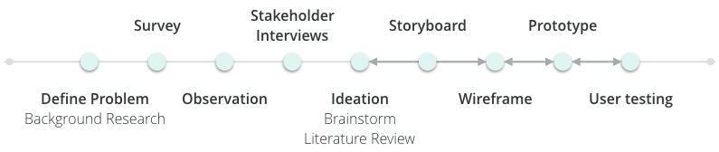

HomieCycle
A ubiquitous design concept makes recycling no longer confusing for campus residents
UX Design

Project Type
2018 CHI Design Competition
Group Project
Fall 2017 (4 months)
Role
UX Designer
Skills
Wireframing, Prototyping
Survey, Usability Testing
Interview, Observation
The Challenge
ENGAGE FOR BEHAVIORAL CHANGE
Promoting recycling rate on campus has long been a challenge for schools. With students coming and leaving, the impact of recycling campaigns lasts shorter and becomes hard to evaluate.
“I think one of our biggest challenges is developing that internal motivation in people to actually recycle. If people are motivated to do it, you will do it. And getting that motivation is challenging. It’s challenging i think for any behavioral change. We are not alone in that.”
--Tracy Artley, Office of Campus Sustainability
introduction
SOLUTION AT A GLANCE
Design Process
FUNNEL BIG THINKING TO DELICATE DESIGN
Research
BUILD THE PUZZLE FROM ABSTRACT TO CONCRETE
SURVEY
We collected survey responses from over 100 students to understand self-reported recycling behaviors and environmental awareness. Our analysis reveals three major factors that prevent people from recycling and major reasons for them doing recycling.
25%
respondents lack correct recycling knowledge
27%
respondents consider recycling inconvenient
36%
respondents think finding recycle bins is not easy
OBSERVATION
We observed the sporadic tasks of people getting rid of their waste to understand real recycling behaviors in natural settings. We then aggregated our notes for several main findings.
- Tossing trash happened in a split second
- People did not spend time reading the signage carefully
- People threw away their lunch bag without separating the recyclables
STAKEHOLDER INTERVIEW
To understand the attempts the university has made and challenges they encountered to improve recycling rate, we carried out interviews with staff members at campus sustainability office.
NARROW DOWN THE SCOPE & INSPIRE DESIGN
Based on the findings, we then funneled our scope into student residents at campus housing to consider a solution that can motivate behavioral change from a achievable scale and of similar user demographics. We consulted previous literature to inspire our design, and there are three main concepts that inspire our design to engage people for behavioral change.
Solution
BRAINSTORM & STORYBOARD
Based on the findings, I brainstormed for several ways to tackle the users’ needs, and then expanded the sketches into scenarios that captured users’ pain points, emotion and interactions with the solution.

PROTOTYPE & USER TESTING
I created multiple pro-personas and an anti-persona based on the initial research and testings. These helped me to narrow down my focus and prioritize the needs to guide the converging phase of my design process.


FINAL DESIGN
I created multiple pro-personas and an anti-persona based on the initial research and testings. These helped me to narrow down my focus and prioritize the needs to guide the converging phase of my design process.
IMPACT
HomieCycle provides an interactive and socially-engaging solution to the long existing challenge of improving recycling behaviors. Leveraging the power of community and monetary incentives by completing recycling tasks, we hope it to raise the environmental awareness starting from the campus population, improve the correct recycling behaviors, and bring together the community to achieve a communal goal.